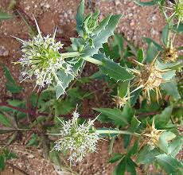

Calyceraceae
Calyceraceae is a small family of about 4-6 genera and 40-60 species, primarily consisting of annual or perennial herbs native almost exclusively to southern South America. Superficially resembling the Asteraceae (Daisy family) due to their flowers being aggregated into heads (capitula), Calyceraceae differs crucially in stamen structure (filaments fused, anthers free) and typically having a persistent, often spiny calyx crowning the fruit. Phylogenetically, Calyceraceae is the sister family to Asteraceae within the order Asterales.
Overview
Calyceraceae is a relatively small family of flowering plants found predominantly in the temperate and alpine regions of southern South America, particularly in the Andes, Patagonia, and Pampas. Most species are low-growing annual or perennial herbs, often forming basal rosettes or cushions, adapted to grasslands, steppes, or disturbed habitats.
The most striking feature of Calyceraceae is the arrangement of their small flowers into dense heads (capitula), surrounded by an involucre of bracts, strongly resembling the flower heads of the Asteraceae family. This similarity reflects their close evolutionary relationship – Calyceraceae is the sister group to the immensely diverse Asteraceae. However, key differences exist, notably in the stamens: Calyceraceae have filaments fused into a tube and free anthers, while Asteraceae have free filaments and fused anthers (syngenesious). Additionally, the fruit (an achene or cypsela) in Calyceraceae is typically crowned by the persistent, often spiny or awned lobes of the original calyx, whereas Asteraceae fruits are crowned by a modified calyx called a pappus (bristles, scales, etc.) or lack a crown.
Understanding Calyceraceae is crucial for interpreting the evolutionary origins of the highly successful Asteraceae family. They represent a lineage sharing several key traits with Asteraceae (heads, inferior ovary, single-seeded fruit) but retaining distinct features.
Quick Facts
- Scientific Name: Calyceraceae
- Common Name: (None widely used)
- Number of Genera: Approximately 4-6
- Number of Species: Approximately 40-60
- Distribution: Primarily southern South America (Andes, Patagonia, Pampas).
- Evolutionary Group: Eudicots - Asterids - Campanulids - Asterales
- Habit: Mostly herbs (often rosettes or cushions).
- Key Feature: Sister family to Asteraceae; flowers in heads; fused filaments & free anthers.
Key Characteristics
Growth Form and Habit
Mostly annual or perennial herbs, frequently forming basal rosettes or low cushions. Stems can be erect or prostrate. Some species develop woody bases (subshrubs).
Leaves
Leaves are usually arranged alternately (sometimes opposite near the base or all basal in a rosette). They are simple, but often deeply pinnately lobed or divided (pinnatifid), appearing compound; sometimes margins are merely toothed or entire. Stipules are absent.
Flowers and Inflorescence
Flowers are small, usually bisexual (sometimes unisexual), typically radially symmetrical (actinomorphic). They are characteristically aggregated into dense, terminal or axillary heads (capitula), which are surrounded by an involucre of herbaceous or spiny bracts (phyllaries), similar to Asteraceae.
- Calyx: The calyx is highly modified, consisting of (4-)5 persistent lobes or teeth located on top of the inferior ovary. These calyx lobes often become hardened, spiny, or awn-like in fruit and aid dispersal.
- Corolla: 5 (or 4) petals, fused (sympetalous) into a long, slender tube with spreading lobes at the apex. Corolla color is typically white, yellowish, greenish, or pinkish.
- Stamens: 5 (or 4), alternating with the corolla lobes and attached to the corolla tube (epipetalous). A key diagnostic feature: the filaments are fused together, forming a tube around the style, while the anthers remain separate (distinct). (This is the opposite arrangement to Asteraceae).
- Ovary: Inferior, composed of usually 2 fused carpels but forming only a single locule containing a single, pendulous ovule. A single slender style passes through the filament tube and typically ends in a capitate (head-like) or slightly 2-lobed stigma.
Fruits and Seeds
The fruit is a dry, indehiscent, single-seeded fruit technically called an achene or, due to the inferior ovary, often termed a cypsela (like in Asteraceae). It is characteristically crowned by the persistent, often hardened and spiny or awned calyx lobes. Sometimes fruits within a head fuse together (syncarp).
The single seed fills the fruit cavity; endosperm is usually thin or absent.
Chemical Characteristics
Plants contain iridoid compounds, typical for the Asterales order. Sesquiterpene lactones, common in Asteraceae, may also occur in some Calyceraceae.
Field Identification
Identifying Calyceraceae involves recognizing its Asteraceae-like flower heads combined with key differences in stamen structure and fruit appendages, alongside its predominantly South American distribution:
Primary Identification Features
- Habit: Mostly herbs, often low-growing rosettes or cushions.
- Location: Almost exclusively in southern South America.
- Inflorescence: Flowers grouped into dense heads (capitula) surrounded by involucral bracts (appears Aster-like).
- Flowers within head: Small, with tubular corolla (usually 5-lobed).
- Stamens: Filaments fused into a tube, anthers free (requires close look/dissection; opposite of Asteraceae).
- Ovary/Fruit: Inferior ovary developing into an achene/cypsela.
- Fruit Crown: Fruit topped by persistent, often spiny or awned calyx lobes (not a typical Asteraceae pappus).
Secondary Identification Features
- Leaves: Usually alternate or basal, often pinnately lobed or divided.
- Flower Color: Typically whitish, yellowish, greenish, or pinkish.
Seasonal Identification Tips
- Flowering/Fruiting: Most easily identified when the characteristic heads are present. The persistent, often spiny calyx on the mature fruits is a key feature visible after flowering.
- Vegetative State: Rosettes of often lobed leaves are visible during the growing season.
Common Confusion Points
- Asteraceae (Daisy Family): Extremely similar overall structure (heads, involucre, inferior ovary, achene/cypsela fruit). Crucial Differences: Asteraceae have fused anthers forming a tube around the style, with free filaments. Calyceraceae have free anthers and fused filaments forming a tube. Asteraceae fruit is crowned by a pappus (bristles, scales, awns derived from calyx, or none), while Calyceraceae fruit has persistent, distinct, often spiny calyx lobes.
- Dipsacaceae / Valerianaceae (now Caprifoliaceae): Also have flowers in dense heads or clusters. Differ in typically having opposite leaves, different stamen numbers (often fewer), free filaments and anthers, and different calyx/fruit structures. Belong to Dipsacales.
Checking the stamen fusion pattern inside a flower and looking for persistent spiny calyx lobes on the fruit (instead of a pappus) are the most reliable ways to distinguish Calyceraceae from Asteraceae.
Field Guide Quick Reference
Look For:
- Herb (often rosette/cushion)
- Mainly S. South America
- Flowers in dense heads (capitula) w/ involucre
- Ovary inferior
- Stamens: Filaments fused, Anthers free
- Fruit (achene/cypsela) crowned by persistent spiny/awned calyx lobes
- Leaves often alternate, pinnately lobed
Key Distinctions from Asteraceae:
- Stamens: Fused filaments (vs. free), Free anthers (vs. fused).
- Fruit Crown: Persistent calyx lobes (vs. Pappus).
- (Subtle floral details also differ)
Notable Examples
The family consists of relatively obscure South American herbs.

Acicarpha tribuloides
(No common name)
An annual or perennial herb found in grasslands and disturbed areas in southern South America (Argentina, Uruguay, Brazil), sometimes introduced elsewhere. Forms basal rosettes of pinnately lobed leaves. Produces dense, spiny flower heads; the fruiting heads with hardened, spine-tipped bracts and calyx lobes are distinctive.

Boopis species
(No common name)
A genus primarily found in the Andes and Patagonia. Species are often perennial herbs forming rosettes or cushions, typically with lobed leaves and dense flower heads characteristic of the family, often found in alpine or steppe environments.

Calycera species
(No common name)
The type genus for the family, found in southern South America. Includes annual and perennial herbs with variable leaf shapes (lobed to entire) and typical Calyceraceae flower heads and fruits crowned by persistent calyx lobes.
Phylogeny and Classification
Calyceraceae belongs to the order Asterales, within the Campanulid clade of Asterid eudicots. Its phylogenetic position is highly significant: molecular studies consistently show that Calyceraceae is the sister group to the Asteraceae (sunflower family). This means Calyceraceae represents the closest living relative to the largest family of flowering plants.
This sister relationship makes Calyceraceae critically important for understanding the evolutionary origin of the key features that define Asteraceae, such as the highly specialized capitulum inflorescence, the pappus (modified calyx), and syngenesious anthers (fused anthers). Calyceraceae shares some traits with Asteraceae (flowers in heads, inferior ovary, single-seeded fruit), suggesting these may be ancestral features for the clade, while differing in others (stamen fusion, calyx structure), highlighting evolutionary divergence after the split from their common ancestor.
Position in Plant Phylogeny
- Kingdom: Plantae
- Clade: Angiosperms (Flowering plants)
- Clade: Eudicots
- Clade: Asterids
- Clade: Campanulids
- Order: Asterales
- Family: Calyceraceae
Evolutionary Significance
Calyceraceae holds major evolutionary importance:
- Sister Group to Asteraceae: Provides the most crucial comparison point for understanding the origin and evolution of the Asteraceae, one of the most successful plant radiations on Earth. Studying Calyceraceae helps infer the ancestral states from which Asteraceae's unique features evolved.
- Evolution of the Capitulum: The presence of Asteraceae-like flower heads (capitula) in Calyceraceae suggests this structure evolved before the divergence of the two families.
- Character Evolution: Differences in stamen fusion (fused filaments vs. fused anthers) and calyx modification (persistent lobes vs. pappus) illustrate key evolutionary divergences between the two sister families.
- Biogeography: Its predominantly southern South American distribution contrasts sharply with the cosmopolitan range of Asteraceae, raising questions about diversification rates and historical biogeography within the Asterales order.